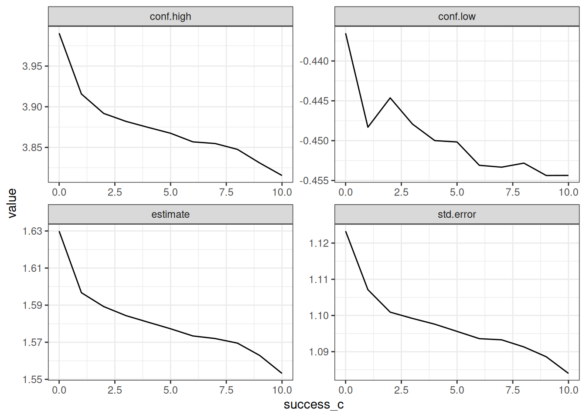
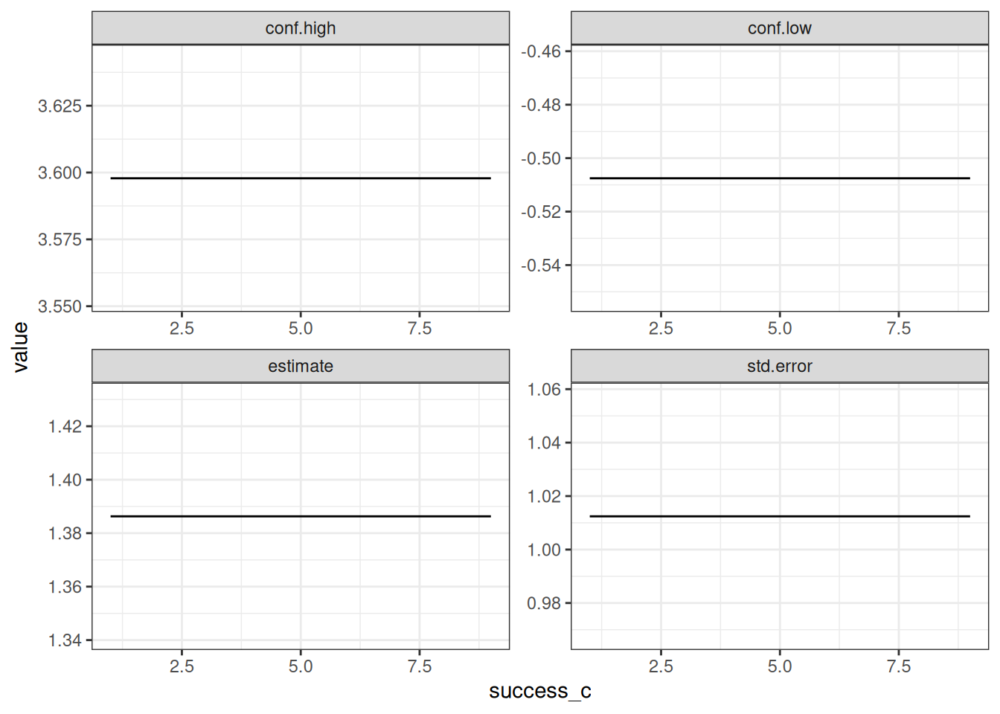
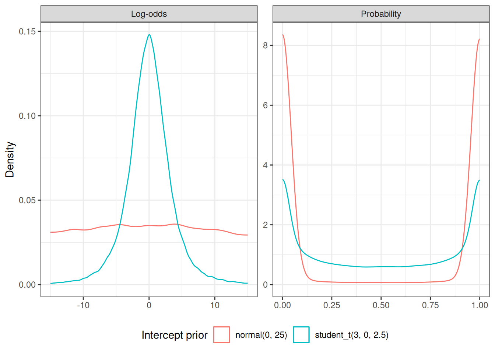
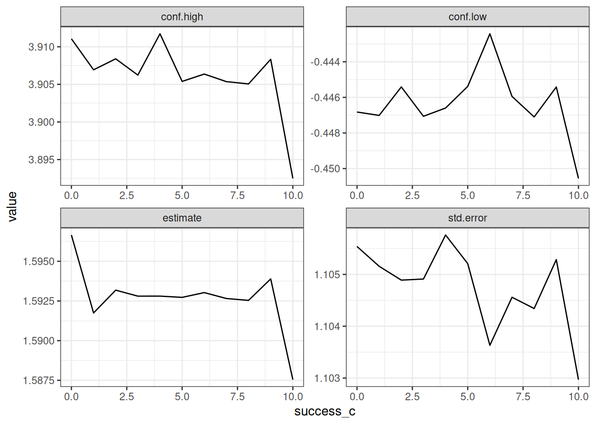
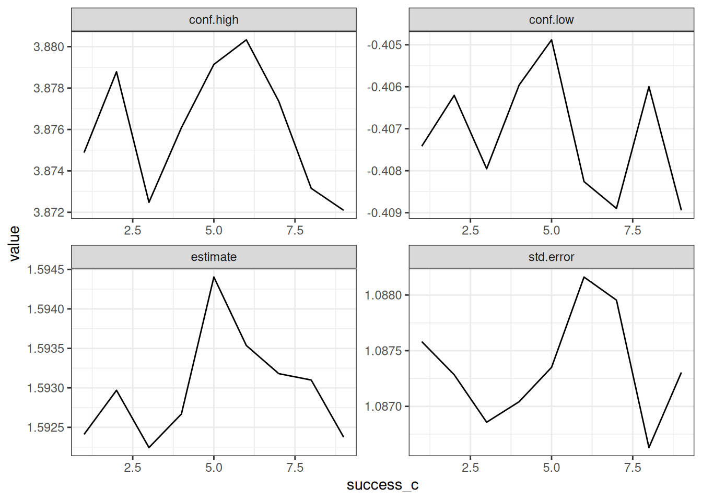

library(ggplot2)
library(brms)
library(flextable)
theme_set(theme_bw())Introduction
When I was recently analyzing cutoff points for a three-arm study, I noticed that the treatment effect in one arm (Arm B) as compared to control (Arm A) was affected by how subjects performed in a third arm (Arm C). This was specifically in a logistic regression situation where we don’t have any nuisance variability parameters that could affect the estimates. This was surprising!
This was specifically occurring with a Bayesian regression model (fit using brms but confirmed with rJAGS). It also does not seem to be an issue with frequentist models.
In this case, there was no explicitly modeled correlation between the parameter estimates of treatment A, B, or C. Nevertheless, something seems to be going on that influences the estimate.
This post will first showcase the issue with some toy datasets and then attempt to characterize the problem more generally. In the end, I’m not sure what the solution is — other than to keep it in mind when designing trials.
Update: 2026-09-28. I have since found the likely cause, the default centering of the intercept in
brms, and a fix. See Section 3.3.
Example
Data Description
The function below creates a data.frame with n = 10 subjects per arm. The inputs allow the user to specify how many subjects are successes in this trial. The first x subjects of each arm will be successes — while the rest will be failures.
n <- 10
success_vector <- function(x, n) {
c(rep(1, x), rep(0, n - x))
}
make_data <- function(success_a, success_b, success_c, n) {
data.frame(
id = seq(1, n * 3),
arm = rep(c("A", "B", "C"), each = n),
outcome = c(
success_vector(success_a, n),
success_vector(success_b, n),
success_vector(success_c, n)
)
)
}
d1 <- make_data(5, 8, 2, n = 10)
d2 <- make_data(5, 8, 8, n = 10)d1 and d2 only differ in the number of successes in Arm C, as you can see in Table 1. The rows highlighted in light blue are the only ones that differ between the two datasets.
joined_data <- d1 |>
dplyr::left_join(d2, by = c("id", "arm"), suffix = c(".d1", ".d2"))
diff_rows <- which(joined_data$outcome.d1 != joined_data$outcome.d2)
joined_data |>
flextable() |>
bg(i = diff_rows, bg = "#d4edf0", part = "body") |>
autofit()id | arm | outcome.d1 | outcome.d2 |
|---|---|---|---|
1 | A | 1 | 1 |
2 | A | 1 | 1 |
3 | A | 1 | 1 |
4 | A | 1 | 1 |
5 | A | 1 | 1 |
6 | A | 0 | 0 |
7 | A | 0 | 0 |
8 | A | 0 | 0 |
9 | A | 0 | 0 |
10 | A | 0 | 0 |
11 | B | 1 | 1 |
12 | B | 1 | 1 |
13 | B | 1 | 1 |
14 | B | 1 | 1 |
15 | B | 1 | 1 |
16 | B | 1 | 1 |
17 | B | 1 | 1 |
18 | B | 1 | 1 |
19 | B | 0 | 0 |
20 | B | 0 | 0 |
21 | C | 1 | 1 |
22 | C | 1 | 1 |
23 | C | 0 | 1 |
24 | C | 0 | 1 |
25 | C | 0 | 1 |
26 | C | 0 | 1 |
27 | C | 0 | 1 |
28 | C | 0 | 1 |
29 | C | 0 | 0 |
30 | C | 0 | 0 |
Table 2 confirms this — the success rate in Arm C is the only one that differs between d1 and d2.
summary_table <- dplyr::bind_rows(
d1 |> dplyr::mutate(dataset = "d1"),
d2 |> dplyr::mutate(dataset = "d2")
) |>
dplyr::group_by(dataset, arm) |>
dplyr::summarise(
n = dplyr::n(),
successes = sum(outcome),
rate = successes / n,
.groups = "drop"
) |>
tidyr::pivot_wider(names_from = dataset, values_from = c(successes, rate))
rate_diff_rows <- which(summary_table$rate_d1 != summary_table$rate_d2)
summary_table |>
flextable() |>
set_header_labels(
arm = "Arm",
n = "N",
successes_d1 = "Successes (d1)",
successes_d2 = "Successes (d2)",
rate_d1 = "Rate (d1)",
rate_d2 = "Rate (d2)"
) |>
colformat_double(j = c("rate_d1", "rate_d2"), digits = 2) |>
bg(i = rate_diff_rows, bg = "#d4edf0", part = "body") |>
autofit()Arm | N | Successes (d1) | Successes (d2) | Rate (d1) | Rate (d2) |
|---|---|---|---|---|---|
A | 10 | 5 | 5 | 0.50 | 0.50 |
B | 10 | 8 | 8 | 0.80 | 0.80 |
C | 10 | 2 | 8 | 0.20 | 0.80 |
If you received this data and were asked to characterize the treatment effect between Arm A and Arm B — would you expect the same answer? In both cases the rate of success in Arm A is 50%, while the rate of success is 80% in Arm B.
Frequentist Logistic Regression
With a logistic regression model you get an estimate of the odds ratio from the parameters — but you would still expect the same value from both datasets.
This is precisely what happens, as shown in Table 3:
tbl_d1 <- glm(outcome ~ arm, data = d1, family = binomial) |>
gtsummary::tbl_regression(
estimate_fun = gtsummary::label_style_number(digits = 3),
pvalue_fun = gtsummary::label_style_pvalue(digits = 3)
)
tbl_d2 <- glm(outcome ~ arm, data = d2, family = binomial) |>
gtsummary::tbl_regression(
estimate_fun = gtsummary::label_style_number(digits = 3),
pvalue_fun = gtsummary::label_style_pvalue(digits = 3)
)
gtsummary::tbl_merge(
list(tbl_d1, tbl_d2),
tab_spanner = c("D1", "D2")
)| Characteristic |
D1
|
D2
|
||||
|---|---|---|---|---|---|---|
| log(OR) | 95% CI | p-value | log(OR) | 95% CI | p-value | |
| arm | ||||||
| A | — | — | — | — | ||
| B | 1.386 | -0.508, 3.598 | 0.171 | 1.386 | -0.508, 3.598 | 0.171 |
| C | -1.386 | -3.598, 0.508 | 0.171 | 1.386 | -0.508, 3.598 | 0.171 |
| Abbreviations: CI = Confidence Interval, OR = Odds Ratio | ||||||
In both cases the estimate for Arm B is exactly the same — as expected. Results are reported to three digits to emphasize this.
Bayesian Model
The following code fits the same model using the brms package. The two models are made as similar as possible — using the same seed and init values.
init <- 0
seed <- 20260622
chains <- 4
warmup <- 1000
iter <- 1e6
cores <- 4model1 <- brm(
outcome ~ arm,
data = d1,
family = bernoulli,
init = init, seed = seed,
cores = cores,
chains = chains, warmup = warmup, iter = iter,
refresh = 0, silent = 2
)
model2 <- update(
model1,
newdata = d2,
init = init, seed = seed,
chains = chains, warmup = warmup, iter = iter,
refresh = 0, silent = 2
)In Table 4 you can see small differences in the estimate for Arm B. The upper bound of the 95% credible interval (log OR) is 3.892 for D1 and 3.848 for D2. If a trial’s success criterion were defined as that bound falling below a threshold between these two values, D1 would be considered a failure while D2 would be a success — despite having identical data in Arms A and B.
brms_tbl_d1 <- model1 |>
gtsummary::tbl_regression(
estimate_fun = gtsummary::label_style_number(digits = 3),
pvalue_fun = gtsummary::label_style_pvalue(digits = 3)
) |>
# gtsummary complains about using a brms model but it works fine
suppressMessages()
brms_tbl_d2 <- model2 |>
gtsummary::tbl_regression(
estimate_fun = gtsummary::label_style_number(digits = 3),
pvalue_fun = gtsummary::label_style_pvalue(digits = 3)
) |>
suppressMessages()
gtsummary::tbl_merge(
list(brms_tbl_d1, brms_tbl_d2),
tab_spanner = c("D1", "D2")
)| Characteristic |
D1
|
D2
|
||||
|---|---|---|---|---|---|---|
| Group | Beta | 95% CI | Group | Beta | 95% CI | |
| arm | cond | cond | ||||
| armB | cond | 1.589 | -0.445, 3.892 | cond | 1.570 | -0.453, 3.848 |
| armC | cond | -1.588 | -3.892, 0.448 | cond | 1.569 | -0.451, 3.842 |
| Abbreviation: CI = Credible Interval | ||||||
These models drew 3,996,000 posterior samples in total, which reduces sampling error when estimating quantities like the 95% credible interval.
To quantify the sampling error, we can bootstrap the upper bound of the 95% credible interval for Arm B:
set.seed(20260629)
all_b_draws <- model2 |>
brms::as_draws(variable = "b_armB") |>
unlist(use.names = FALSE)
upper_95_boot <- function(x, idx) {
if (!is.null(idx)) x <- x[idx]
quantile(x, 0.975)
}
boot_out <- boot::boot(all_b_draws, upper_95_boot, R = 100)
boot_out
ORDINARY NONPARAMETRIC BOOTSTRAP
Call:
boot::boot(data = all_b_draws, statistic = upper_95_boot, R = 100)
Bootstrap Statistics :
original bias std. error
t1* 3.847546 -3.739306e-05 0.001778606The bootstrap standard error of the upper 95% bound is approximately 0.002. Since the difference between D1 and D2 visible in Table 4 is larger than this standard error, the discrepancy is unlikely to be sampling noise.
Further Exploration
The Effect of Different Numbers of Successes in Arm C
The following section tries to understand if there is a pattern to how this difference manifests. Models are fit across all possible numbers of successes in Arm C, from 0 to 10.
Is there a systematic difference, or does it randomly jump around?
mod_definitions <- data.frame(
success_a = 5,
success_b = 8,
success_c = 0:10,
n = 10
)# Cached via memoise; clear here::here(".cache") to force a re-run.
# Note: cache key is the data (.d), model_id, and iter. The fitted model
# object itself is excluded because its hash changes on every refit.
# Clear the cache if chains, warmup, seed, or a model's priors change.
.fit_mod <- memoise::memoise(
function(.d, .model, model_id, iter) {
update(
object = .model,
newdata = .d,
init = init, seed = seed,
chains = chains, warmup = warmup, iter = iter,
cores = cores,
refresh = 0, silent = 2
) |>
broom.mixed::tidy()
},
cache = cachem::cache_disk(here::here(".cache")),
omit_args = ".model"
)
all_mods <- mod_definitions |>
purrr::pmap(make_data) |>
purrr::map(.fit_mod, .model = model1, model_id = "default", iter = iter)
mod_results <- all_mods |>
purrr::map(function(.d) dplyr::select(.d, term, estimate, std.error, conf.low, conf.high))out <- mod_definitions
out$x <- mod_results
out <- out |> tidyr::unnest(x)Figure 1 shows a clear, systematic pattern: the point estimate, standard error, and both bounds of the credible interval for Arm B all decrease as the number of successes in Arm C increases. This is in direct contrast with Figure 2 where the GLM has consistent values across all successes in Arm C.
out |>
tidyr::pivot_longer(c(estimate, std.error, conf.low, conf.high)) |>
dplyr::filter(term == "armB") |>
ggplot(aes(x = success_c, y = value)) +
geom_line() +
facet_wrap(~name, scales = "free")
# GLM has issues fitting when 0 or 10 successes in Arm C
out_glm <- mod_definitions |>
subset(success_c > 0 & success_c < 10)
all_glm_mods <- out_glm |>
purrr::pmap(make_data) |>
purrr::map(function(.d) {
glm(outcome ~ arm, data = .d, family = binomial) |>
broom::tidy(conf.int = TRUE)
}) |>
purrr::map(
function(.d) dplyr::select(.d, term, estimate, std.error, conf.low, conf.high)
)
out_glm$x <- all_glm_mods
out_glm <- out_glm |> tidyr::unnest(x)out_glm |>
tidyr::pivot_longer(c(estimate, std.error, conf.low, conf.high)) |>
dplyr::filter(term == "armB") |>
ggplot(aes(x = success_c, y = value)) +
geom_line() +
facet_wrap(~name, scales = "free")
Different Priors
Section was added on 2026-09-28
After some discussion online, I got a good tip: make the intercept prior flat as well, so the model behaves more like glm.
The default priors for brms are as follows:
brms::prior_summary(model1) prior class coef group resp dpar nlpar lb ub tag
(flat) b
(flat) b armB
(flat) b armC
student_t(3, 0, 2.5) Intercept
source
default
(vectorized)
(vectorized)
defaultThe regression coefficients (class = b) already have flat priors, but the intercept gets a student_t(3, 0, 2.5) prior. As we will see in Section 3.3, this prior is placed on the intercept of the centered design matrix, not on the log-odds of Arm A.
A truly flat intercept prior caused a lot of sampler problems, so I used a very wide normal(0, 25) prior instead. Figure 3 compares the two priors. On the log-odds scale, normal(0, 25) is close to flat over any plausible range, while student_t(3, 0, 2.5) puts most of its mass near 0 (a 50% success rate) and pulls the intercept toward it. On the probability scale the picture reverses: the wide normal piles almost all of its mass near 0% and 100%, much more so than the student-t. A prior that is “flat” on one scale is far from flat on the other. With this much data, though, the posterior is dominated by the likelihood either way.
set.seed(20260928)
n_prior_draws <- 1e5
prior_draws <- dplyr::bind_rows(
data.frame(
prior = "student_t(3, 0, 2.5)",
log_odds = brms::rstudent_t(n_prior_draws, df = 3, mu = 0, sigma = 2.5)
),
data.frame(
prior = "normal(0, 25)",
log_odds = rnorm(n_prior_draws, mean = 0, sd = 25)
)
) |>
dplyr::mutate(probability = plogis(log_odds)) |>
tidyr::pivot_longer(
c(log_odds, probability),
names_to = "scale",
names_transform = list(scale = \(x) ifelse(x == "log_odds", "Log-odds", "Probability"))
) |>
dplyr::filter(scale == "Probability" | abs(value) <= 15)
prior_draws |>
ggplot(aes(x = value, color = prior)) +
geom_density(data = \(d) subset(d, scale == "Log-odds"), bounds = c(-15, 15)) +
geom_density(data = \(d) subset(d, scale == "Probability"), bounds = c(0, 1)) +
facet_wrap(~scale, scales = "free") +
labs(x = NULL, y = "Density", color = "Intercept prior") +
theme(legend.position = "bottom")
# Updated 2026-09-28 to force a flat prior on the intercept to better mimic glm
# forcing a flat prior did not work well though - lots of sampler issues so I did a very wide normal
priors <- prior("normal(0, 25)", class = "Intercept") +
prior("", class = "b")
model1_flat <- brm(
outcome ~ arm,
data = d1,
prior = priors,
family = bernoulli,
init = init, seed = seed,
cores = cores,
chains = chains, warmup = warmup, iter = iter,
refresh = 0, silent = 2
)all_mods_flat <- mod_definitions |>
purrr::pmap(make_data) |>
purrr::map(.fit_mod, .model = model1_flat, model_id = "wide_normal", iter = iter)
mod_results_flat <- all_mods_flat |>
purrr::map(function(.d) dplyr::select(.d, term, estimate, std.error, conf.low, conf.high))out_flat <- mod_definitions
out_flat$x <- mod_results_flat
out_flat <- out_flat |> tidyr::unnest(x)Figure 4 shows that the wider prior on the intercept greatly reduces the pattern seen in Figure 1.
out_flat |>
tidyr::pivot_longer(c(estimate, std.error, conf.low, conf.high)) |>
dplyr::filter(term == "armB") |>
ggplot(aes(x = success_c, y = value)) +
geom_line() +
facet_wrap(~name, scales = "free")
Why? Centering of the Intercept
Section was added on 2026-09-28
By default, brms centers the columns of the design matrix before fitting (center = TRUE). The Intercept prior is placed on this centered intercept, and the intercept brms reports is converted back afterward. With dummy-coded arms, the centered intercept is roughly the average log-odds across all three arms, so it depends on Arm C’s data.
That means:
- Changing the number of successes in Arm C moves the centered intercept.
- The
student_t(3, 0, 2.5)prior shrinks the centered intercept toward 0, and shrinks it more the further the data pull it away. - When
brmsconverts back to the uncentered parameters, that shrinkage is spread across the reported intercept and the arm coefficients, includingb_armB.
A very wide prior barely shrinks, which is why Figure 4 looks much flatter.
If this explanation is correct, turning off centering should remove the effect even with the same student_t(3, 0, 2.5) intercept prior. With center = FALSE, the intercept is just Arm A’s log-odds, and Arm C only informs its own flat-prior coefficient.
However, there are still sampling issues when running this model with 0 and 10 successes in arm C. I haven’t delved into this further but there should be a way of fixing this - maybe having non-flat priors on the other betas will do it.
To be honest, it isn’t entirely clear to me what happens when brms centers the prior. The docs do say that it somehow back transforms it but clearly some relationship remains. See Parameterization of the population-level intercept in brmsformula.
model1_uncentered <- brm(
bf(outcome ~ arm, center = FALSE),
data = d1,
family = bernoulli,
# With center = FALSE the intercept moves into class b and would get a flat
# prior, so set the default Intercept prior on it explicitly
prior = prior(student_t(3, 0, 2.5), class = "b", coef = "Intercept"),
init = init, seed = seed,
cores = cores,
chains = chains, warmup = warmup, iter = iter,
refresh = 0, silent = 2
)
brms::prior_summary(model1_uncentered) prior class coef group resp dpar nlpar lb ub tag
(flat) b
(flat) b armB
(flat) b armC
student_t(3, 0, 2.5) b Intercept
source
default
(vectorized)
(vectorized)
user# As with the GLM, 0 or 10 successes in Arm C cause complete separation. I'm not sure why centering is key to this but it doesn't sample well here
out_uncentered <- mod_definitions |>
dplyr::filter(success_c > 0, success_c < 10)
out_uncentered$x <- out_uncentered |>
purrr::pmap(make_data) |>
purrr::map(.fit_mod, .model = model1_uncentered, model_id = "uncentered_student_t", iter = iter) |>
purrr::map(function(.d) dplyr::select(.d, term, estimate, std.error, conf.low, conf.high))
out_uncentered <- out_uncentered |> tidyr::unnest(x)Figure 5 shows the result: with the same student_t(3, 0, 2.5) intercept prior but no centering, the Arm B estimates no longer depend on Arm C.
out_uncentered |>
tidyr::pivot_longer(c(estimate, std.error, conf.low, conf.high)) |>
dplyr::filter(term == "armB") |>
ggplot(aes(x = success_c, y = value)) +
geom_line() +
facet_wrap(~name, scales = "free")
Discussion
Update: 2026-09-28. The cause turned out to be the default centering of the design matrix in
brms, combined with the informative default prior on the centered intercept (Section 3.3).
The main problem was not the Bayesian model itself, but a default that is easy to miss. The prior on the intercept looks like it is about the reference arm. In fact it is about a data-dependent average over all arms, so the data in one arm can move the estimated effect in another. There are two simple fixes:
- Fit the model with
bf(..., center = FALSE)so the intercept prior applies to the reference arm directly. Note that you then have to set that prior yourself withclass = "b", coef = "Intercept", otherwise it is flat. - Use a much less informative intercept prior. This reduces the effect, but doesn’t remove it.
In general, one of my favorite parts of Bayesian analysis is the ability to define the precise structure of the parameters and how they should affect each other. This example shows that software defaults can add structure you didn’t ask for. It’s worth checking prior_summary() and the center argument in any multi-arm design where arm-to-arm comparisons matter.
Next Steps
My earlier light check with rJAGS seemed to show the same behavior. It’s worth going back to see whether that model used an equivalent centered parameterization or an informative intercept prior. It would also be useful to show the transformation algebraically, so the direction and size of the shift in b_armB can be predicted from the data.